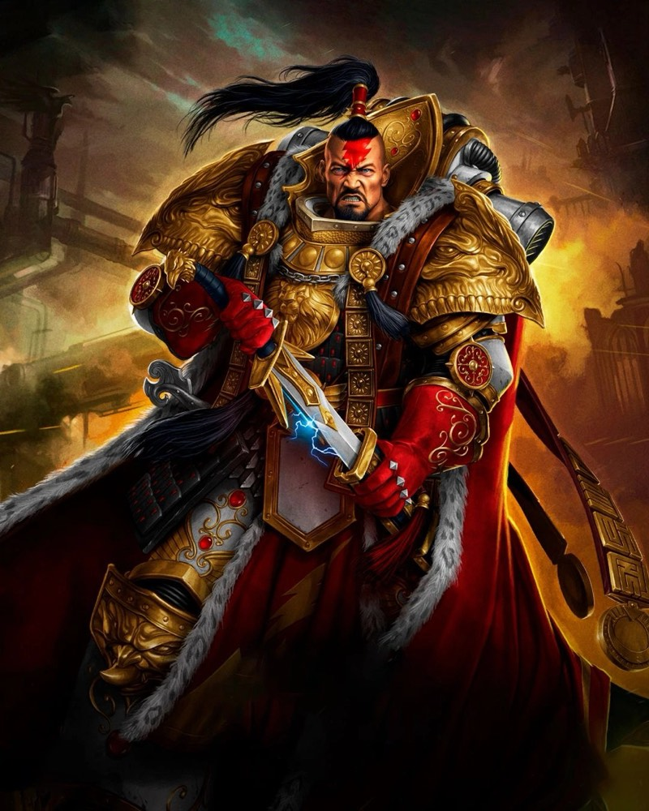
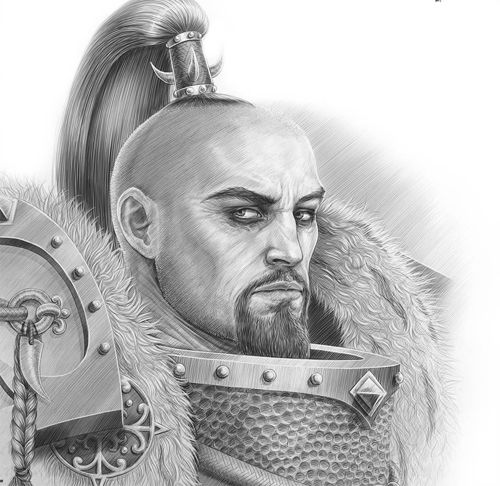

Jaghatai Khan
| Jaghatai Khan | |
|---|---|
| Primarch of the V Legion | |
 The Great Khan in the Wildfire Panoply, from a White Scars portrait Artwork © Games Workshop | |
| Primarch of the White Scars | |
| Tenure | 865.M30 – 084.M31 (missing) |
| Predecessor | None (the Legion was the Star Hunters before his discovery) |
| Successor | Position abolished (Second Founding, the Legion divided into Chapters) |
| Also known as | The Great Khan; the Khagan (Khan of Khans); the Warhawk |
| Allegiance | Emperor of Mankind (Loyalist) |
| Legion | |
| Homeworld | Chogoris (Mundus Planus), Ultima Segmentum |
| Created | Beneath the Himalazian mountains, Terra, c. 792.M30 |
| Discovered | 865.M30, by the Emperor of Mankind and Horus |
| Status | Missing since 084.M31, last seen entering the Webway |
| Relatives |
|
| Wargear | Wildfire Panoply; White Tiger dao; Storm's Voice; Sojutsu-pattern voidbike |
| Known for | Swift, mobile warfare; the retaking of the Lion's Gate Spaceport; the meeting with Mortarion on Prospero |
Jaghatai Khan, called the Great Khan, the Khagan and the Warhawk, was the Primarch of the V Legion of the Space Marine Legions, the White Scars. Born from the gene-work of the Emperor of Mankind and cast by the Warp onto the steppe world of Chogoris, he united its tribes by the sword before the Great Crusade found him in 865.M30. He led the Legion through the last decades of the Crusade as its swiftest and most mobile arm, remained loyal to the Emperor throughout the Horus Heresy, and fought at the Siege of Terra, where he retook the Lion's Gate Spaceport.[1][2]
After the war the Khan accepted the reforms of Roboute Guilliman, though grudgingly, and divided his Legion into Chapters under the Codex Astartes. In 084.M31 he followed a Drukhari raiding force through a gate into the Webway and was never seen again. The White Scars hold that he lives and will return in an hour of need.[3][4]
Imperial scholars have long overlooked the Khan. He wrote no treatise, ruled no empire and held no great court, and the record of his deeds is thinner than that of any brother of comparable rank. Later sources, notably the records opened after the Siege and the testimony of the White Scars themselves, have shown a more careful and consequential figure than the "barbarian lord" of earlier summaries.[5]
Early life
[edit]Chogoris
[edit]
Like all primarchs, the infant Khan was taken from the Emperor's gene-laboratory beneath the Himalazian mountains by the intervention of the Chaos powers and flung across the galaxy. His capsule came to rest, in about 792.M30, on a world of the Yasan Sector which the Imperium later named Mundus Planus, and its people called Chogoris. It was a fertile world of green plains, white mountains and blue seas, and it had recovered, since the Age of Strife, to a level of technology resembling the pike and powder armies of ancient Terra.[5]

Most of the world was held by a disciplined feudal empire under a ruler styled the Palatine. West of it lay the Empty Quarter, a poor grassland where nomad tribes fought one another for pasture. The Palatine's nobles hunted these tribesmen for sport and took slaves from them. The child was found by Ong Khan, chieftain of the small Talaskar tribe, who took him in as a gift of the gods. The tribesmen noted that the boy had "fire in his eyes", which they held to be the mark of a great warrior.[5]
The turning point of his youth, in Chogorian tradition, was the murder of Ong Khan by the rival Kurayed tribe. The young primarch led the Talaskar against them, burned their camps and executed their chieftain. From that day he swore to end the feuding of the steppe. He conquered neighbouring tribes and absorbed them into the Talaskar confederacy, broke up old tribal groupings to dissolve their blood-feuds, made service in the host compulsory, and promoted by merit rather than birth. Ten years after his arrival, a hunting party of the Palatine's nobility captured him; only one mutilated rider of that party returned. The Khan then turned his armies on the Palatine's empire itself and, within a few years, ruled the whole planet.[5]
Discovery
[edit]The conquest of Chogoris was complete less than six months before the Emperor's arrival in 865.M30. It was not a Pioneer Company of the V Legion that found the world but a fleet of the Luna Wolves, accompanied by Horus and by the Emperor in person. The Khan knelt to his father, but Imperial records stress that his submission was reasoned. He had struggled for decades with the disunity of his people, and in the Imperium and its Imperial Truth he saw a larger form of the settlement he had imposed on the steppe. He bargained for the treatment of the Chogorian people and for his own place in the Imperium, and then accepted command.[5]
Only Roboute Guilliman and Rogal Dorn objected to the brevity of his induction into the culture of the Imperium. Both thought that leaving a new primarch without a grounding in Imperial history and politics would cost the Imperium later. The Great Crusade was too short of commanders to wait, and the Khan took up the mastery of the V Legion almost at once. His brothers called him the Khan. His own warriors called him the Khagan.[5]
Great Crusade
[edit]The White Scars
[edit]The V Legion that the Khan inherited was scattered across the galaxy in a thousand separate wars, and its Terran Legionaries had little sense of common identity. He recruited from among his Chogorian companions, built a new core from the steppe's tribes, and renamed the Legion the White Scars. He ranked his Legionaries by merit, kept the clan structure of the steppe in the form of the "Brotherhoods", and raised from among his Chogorian recruits an elite bodyguard, the Keshig, whose members were dispersed through the Legion to carry his methods with them.[1]
The Khan chose the lawless worlds of the Kolarne Circle as the Legion's first campaign as a unified body. The Circle was a cluster of feral worlds held by renegade human stocks and wandering xenos hosts, with little strategic value. Its worth lay in the lesson: no single company could win there, and the Legion had to learn to fight as one. Out of the Circle came the commanders who would lead the White Scars through the Heresy, among them Qin Xa, Targutai Yesugai and Hasik Noyan-Khan.[1]
Campaigns
[edit]The White Scars became the Crusade's pathfinders and raiders. Their fleets were refitted by Mars for a single purpose, speed, and their Legionaries rode into battle on bikes and jetbikes. They sought the weak point in an enemy's line and struck it before the main Imperial force had arrived. The Legion fought alongside the Blood Angels, Ultramarines, Salamanders and Emperor's Children at Arco, a battle honour that all five Legions bore even after the Heresy had divided them. In 881.M30 the White Scars joined the Luna Wolves and the Death Guard at Drune, where three Legions, each led by its primarch, brought an arid world to compliance. The Khan and Horus, who first met in these years, were said to share an impatience with the formalities of empire.[6]
The White Scars took part in the Ullanor campaign of c. 999.M30 – 000.M31 against the great Ork empire, alongside the Ultramarines, the Mechanicum and the Titan Legions. After the victory the Emperor named Horus Warmaster and returned to Terra, and the Khan came to know the man who would break the Crusade as a comrade. He was not present at the Council of Nikaea, held to decide the place of psykers in the Imperium: the Warmaster had sent him to the Chondax system just as the Council was preparing to meet. His Stormseer Targutai Yesugei, then a junior Librarian, attended in his place and put to the Council a third way, in which psykers were trained rigorously and used with respect rather than abolished.[1]
Horus Heresy
[edit]Chondax and the Alpha Legion
[edit]The first signs of the rebellion reached the Khan on the Chondax front, in the closing stages of a long war of several years against the Orks, the remnants of the empire broken at Ullanor. The messages were contradictory and out of order: Leman Russ had gone rogue; the Warmaster had; Ferrus Manus had killed Fulgrim; the Mechanicum was in revolt. Some bore time-stamps months old and some only hours. Dorn urged him to return to Terra. The Warmaster ordered him to bring judgement on the Space Wolves. The Khan, with his Legion assembled, refused to act against any brother on the strength of rumour. He did not know which of his brothers was the enemy.[1]
He was hemmed in by warp storms that proved, in time, to have been contrived, and by an encirclement of Alpha Legion ships. He ordered the fleet to execute the zao, the "Chisel", a manoeuvre the V Legion's ships had been refitted for above all others, and broke out. He then set his course for Prospero, to find Magnus the Red, the only brother whom he fully trusted, in the hope that the one primarch able to see the Warp as it was could explain what was happening.[1]
Prospero and the lodges
[edit]Prospero was a ruin when the White Scars reached it in 007.M31. The Khan descended in person into the dead city and found, in the crystal caves below it, the remnant of a Thousand Sons psyker who told him what he could of the war. There Mortarion, Primarch of the Death Guard, came to him with the Deathshroud and tried to win him to the Warmaster's cause. The Khan refused, and the two primarchs fought in the ruins of Tizca until Mortarion, learning that the Legion's fleets were already at war, was snatched away to his ships. While the Khagan was on the surface, a faction in the Legion acted. Members of the Warrior Lodges, a secret fraternity the Emperor had disapproved of, led by Hasik Noyan-Khan, had been in contact with the Warmaster's partisans since Chondax. They seized the flagship Swordstorm and tried to bring the fleet over to Horus. The attempt split the V Legion. Loyal Brotherhoods led by commanders such as Shiban Khan fought the lodge-brothers for the capital ships, and the Legion that went on to fight for the Emperor was smaller and harder than the one that had arrived at Prospero.[1]
The Path of Heaven
[edit]
For nearly four years, from 007 to 011.M31, the White Scars waged a guerrilla war on the Traitors' supply lines. Their losses mounted. After an ambush by the Iron Warriors at Iluvuin, the Khan resolved to reach Terra and stand by the Emperor. The Ruinstorm, the great warp storm created by the Word Bearers at Calth, closed the routes. A Traitor task force of Death Guard and Emperor's Children under Lord Commander Eidolon followed the Legion everywhere.[1]
The White Scars made a feint at the ruined warp gate known as the Kalium Gate. The Traitors believed that the Khan fell there in a duel with Eidolon, but fallen figure was the Keshig master Qin Xa, wearing the Khagan's armour. The true object was to find the Navigator Pieter Achelieux and, through him, a void-station in the Catallus rift that held the Dark Glass, a relic of the Age of Technology able to open a way into the Webway. This was the "Path of Heaven". Qin Xa died of his wounds. Targutai Yesugai led the strike onto the station and the Legion's surviving ships made for the Sol System.[1][7]
Siege of Terra
[edit]In the final phase of the Siege of Terra, in 014.M31, the Khan arrived with the remnant of the Legion. The accepted account, set down after the opening of the Palace archives, differs from the shorter record found in earlier Imperial summaries. The older summaries recorded only that the White Scars harried the Traitor flanks while the Palace walls held, and that the Khan redirected his mobile columns and the surviving armoured divisions of the Imperial Army against the Lion's Gate Spaceport.[3] The later accounts agree on that stroke and add its price.[2]
The Spaceport was the Traitors' port of entry, and every dropship that landed there fed the assault on the Palace. At dawn the Khan struck the garrison from an unexpected direction and carried the position. He then ordered the port's defence lasers reactivated and turned them on the Traitor fleet, cutting the flow of men and machines to the walls by half. It was the most consequential counter-stroke of the siege.[2]
The Khan then ordered the spaceport's defence lasers reactivated and a perimeter set, and his troops threw back several frenzied Traitor counter-attacks while the guns fired on the unprotected dropships of the Warmaster's fleet. An attempt to seize the Eternity Wall Spaceport was beaten back.[2]
Later life and disappearance
[edit]Great Scouring
[edit]The Khan recovered and returned to the Legion. In the Great Scouring the White Scars were among the loyalist forces that hunted the broken Traitor Legions, and the Khan's lightning raids denied the Traitors a place of rest within the Imperium's borders. When Guilliman published the Codex Astartes, the Khan, like Dorn and Russ, argued against the division of the Legions, then accepted it for the sake of unity. The V Legion was divided into Chapters in the Second Founding.[8]
Disappearance
[edit]The White Scars returned to Chogoris after the war and found that their homeworld, and the Yasan Sector around it, had been raided repeatedly by the Drukhari, who had carried off thousands of Chogorians as slaves while the Legion was away. The Khan swore oaths against the xenos and fought them for seventy years, from about 014 to 084.M31, across the worlds bordering the Maelstrom, the warp rift in the Ultima Segmentum.[4]
In 084.M31, after the Battle of Corusil V, the Khan led the First Brotherhood in pursuit of a Drukhari force and a mighty Archon of its kabal. The raiders retreated through a gate into the Webway. The Khan followed. The gate closed behind him, and neither he nor the Brotherhood was seen again in realspace.[4] The White Scars have never accepted that he died. Their tradition holds that he is alive in the Webway, hunting through it, and that when the Imperium is in its greatest need, he will ride out of it.[4]
Earlier summaries ascribed the disappearance to the warp rift itself and said only that the Khan "went into the Maelstrom". The Webway account is now accepted, on the evidence of the Chapter's own records.[4]
Legacy
[edit]In the Era Indomitus the Khan's absence remains a wound in the White Scars. The Chapter and its successors still fight under his hunting doctrine, and they pursue the Drukhari more fiercely than any other enemy. Its warriors still ride out beneath a banner bearing the Khan's mark.[9]
Character and abilities
[edit]Of all the primarchs, the Khan found the Great Crusade most to his liking. It was an endless hunt through the dark places of the galaxy, and he was said to have laughed as he killed. He was no simple berserker. He held that even a small task should be done with discipline, and a sword stroke or a diplomatic word equally well. He was the most reclusive of the primarchs, comfortable on the march and uncomfortable at court, and he sought no credit for his victories. His brothers rarely understood him. Guilliman distrusted him, Russ was exasperated by him, Lorgar despised him as an untutored savage, and only Horus, it was said, saw in him a kindred spirit.[5]
As a commander he excelled at speed and surprise. He used reconnaissance and bait to draw the enemy's attention, then attacked its weakest point from an unexpected direction, and he had the patience to wait for the moment. He was also a diplomat of ability. His bargain with the Emperor at Chogoris and his conduct of the Legion's Chogorian and Terran halves show a consistent practicality. His physical gifts were those of every primarch: great strength, speed and endurance, and he was an exceptional swordsman and rider.[1]
Wargear
[edit]The Khan's armour was the Wildfire Panoply, a suit of artificer armour fitted with augmetic systems to sharpen his reflexes. His principal weapon was the White Tiger dao, a master-crafted sabre, used most often from the saddle of his bike. At his side he carried Storm's Voice, an archaeotech pistol of the Age of Technology that discharged lightning, a gift from the Emperor. His mount was the Sojutsu-pattern voidbike, a prototype jetbike older than the Scimitar pattern, with thrusters able to give limited flight and manoeuvre in vacuum, and classed by the Logisticae Imperialis as an ultralight fighter.[1]
Timeline
[edit]| Date | Event |
|---|---|
| c. 792.M30 | Created on Terra; his capsule comes to rest on Chogoris |
| Before 865.M30 | Unites the steppe tribes and conquers the Palatine empire |
| 865.M30 | Found by the Emperor and Horus; takes command of the V Legion, the White Scars |
| 881.M30 | Compliance of Drune with Horus and Mortarion, the Luna Wolves and the Death Guard |
| c. 999.M30 – 000.M31 | Fights in the Ullanor Crusade |
| 001.M31 | Sent to Chondax by the Warmaster; his Stormseer Yesugei speaks for the Legion at the Council of Nikaea |
| From c. 001.M31 | The Chondax campaign against the Orks |
| 007.M31 | Breaks the Alpha Legion encirclement at Chondax; visits the ruins of Prospero, where he meets Mortarion; the lodge revolt in the Legion |
| 007–011.M31 | The Path of Heaven: four years of raiding against the Traitors' supply lines |
| 011.M31 | Feint at the Kalium Gate and breakout through the Ruinstorm towards Terra |
| 014.M31 | The Siege of Terra; takes the Lion's Gate Spaceport |
| 014–c. 021.M31 | Fights in the Great Scouring |
| 021.M31 | Accepts the Second Founding of his Legion into Chapters |
| c. 014–084.M31 | Seventy years of war against the Drukhari around the Yasan Sector |
| 084.M31 | Follows a Drukhari force into the Webway after the Battle of Corusil V and disappears |
See also
[edit]Notes
[edit]References
[edit]- ^ a b c d e f g h i j k Wraight, Chris. Jaghatai Khan: Warhawk of Chogoris (novel). Black Library, Ch. 1.
- ^ a b c d Wraight, Chris. Scars (novel). Black Library.
- ^ a b Wraight, Chris. The Path of Heaven (novel). Black Library.
- ^ a b c d e Codex Adeptus Astartes - Space Marines (8th Edition) "The Fate of the Great Khan," "Victories of the Khans," pp. 33-34. Games Workshop.
- ^ a b c d e f g McNeill, Graham. A Thousand Sons (novel). Black Library.
- ^ Dembski-Bowden, Aaron. Aurelian (novella). Black Library.
- ^ Hoare, Andy. Savage Scars (novel). Black Library.
- ^ Wylie, Neil et al.. The Horus Heresy Book Eight: Malevolence (Forge World Series). Black Library, pp. 137-157, 226-227.
- ^ The Horus Heresy: Liber Astartes (2nd Edition) (Specialist Game), pg. 183. Games Workshop.